한 프레임도
양보하지 않는다UNTIL IT MATCHES THE ORIGINAL
스타크래프트 클랜의 경기 기록·통계·리그·리플레이 재생을 한데 묶은 플랫폼 STARGATE를 AI와 짝을 이뤄 설계하고 만들었습니다. 리플레이 파일 하나를 받아 원작 엔진으로 다시 돌리고, 그 결과를 통계·검색·재생으로 쓸 수 있는 데이터로 바꾸는 백엔드가 중심입니다. 원작과 한 프레임이라도 어긋나면 끝까지 쫓았습니다.
맞춘 프레임
(2026.10.04 – 10.26)
(배포 전 매번 전부 통과)
3D 유닛·건물 모델
(실측·되물린 값·함정)
처음 일정 만들고 글쓰기할 때 아무 데나 클릭해도 커서가 생겨야 해. (당연히 처음 위치에)쓰는 사람의 첫 1초까지 설계 대상이었다.
새 DB 칸 필요. 재생용 참값과 통계용 참값 구분.무거운 재생 데이터를 지워도 통계는 남도록 — 데이터 수명을 갈랐다.
원작을 다시 보니 1팀이 빨강 2팀이 파랑이네. 우린 다 반대로 쓰고 있어. 바로잡아줘.팀색은 한 상수에 모여 있어 재생기·데이터창·목록이 한 번에 바뀌었다.
라이팅 테마는 사실 컬러/투명도/글로우에 관한 거라, 그 외의 형태적인 면은 기본으로 분리하고 싶어. 그래야 나중에 색만 쏙쏙 바꾸기 쉬우니까.형태와 색의 관심사 분리 — UI에도 같은 설계 감각을 요구했다.
아직도 사진 드래그 느려. 내 관찰 결과 — 1. 적은 양의 변화일 땐 괜찮다 2. 7~10개 정도 바뀌기 시작하면 느려짐.재현 조건을 좁혀 건넨 버그 보고 — 관찰이 곧 실마리였다.
이해가 안 돼… 왜 64칸으로 굽지?숫자 하나에도 근거를 물었다. 설명할 수 없는 값은 남기지 않는다.
클랜의 모든 경기가 기록되고, 다시 재생되는 곳
모든 건물 우클릭 대상으로! 원작이 그럼.기준은 늘 하나였다 — 원작이 어떻게 하는가.
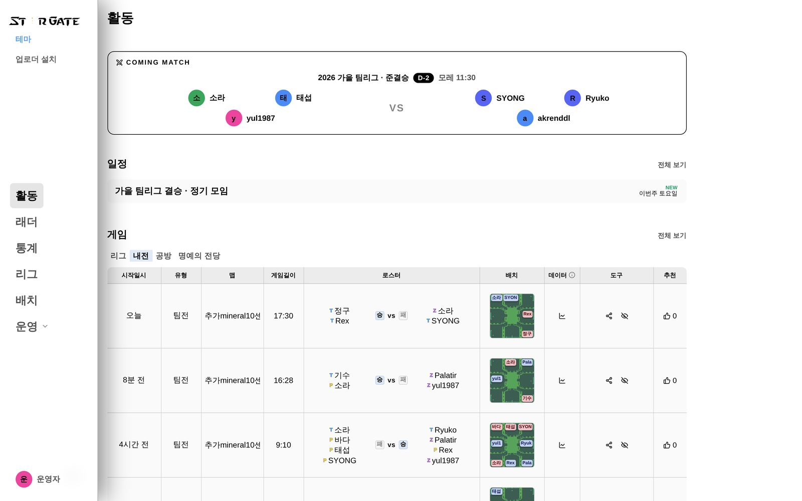
◆무엇을 하는 서비스인가
- 업로더(데스크톱 앱)가 리플레이를 올리면 경기 결과·참가자·맵·시작 위치가 자동 등록
- 서버가 리플레이를 원작 엔진(OpenBW)으로 다시 돌려 유닛 궤적·데미지·자원 같은 참값을 뽑음
- 참값으로 통계·래더·검색·우세도 그래프를 만들고, 웹에서 3D 재생·자동 중계
- 리그(대진표·세트), 배치고사(라운드로빈 점수), 일정(노션형 문서), 외부 공유까지
세 저장소, 하나의 흐름
서버에서 구워서 쓰는구먼. 품질 높게 구워서 내리면 되겠다.무거운 일은 한 번만, 서버나 빌드 시각에. 받는 쪽은 가볍게.
리플레이 한 개를, 쓸 수 있는 데이터로
1로 하되 누가 그 판을 열어도 채우지 않기. 운영자 재분석에 포함시키고, 참값 제거 시 제거 안 되게 주의."언제 계산되는가 · 언제 지워지는가"를 먼저 정하고 표를 짰다.
01원작 엔진을 서버에 들이다
OpenBW를 고정 커밋으로 받아 리마스터 리플레이용 패치(2,455줄)를 덧대고, 덤퍼 bwdump.cpp(1,821줄)를 함께 빌드하는 Docker 멀티 스테이지. 최종 이미지는 Python slim + 바이너리 하나.
02참값 트랙 → 분당 곡선
덤퍼가 낸 OBWT 트랙(판 9~13)을 풀어 사람마다 일꾼 수 · 인구 · 쥔 자원 · 건물 생애 · 테크 시각 · 주고받은 데미지를 1분 간격으로 굽는다. 게임 그래프·우세도·통계 곡선이 모두 이 표 하나를 읽는다.
03수명이 다른 데이터는 다른 표로
재생용 참값은 크고(수 MB) 지울 수 있어야 하고, 통계용 참값은 작고 영원해야 한다. 한 열에 있던 것을 새 표로 이관하고 읽기·쓰기를 전환. DB 용량 문제를 계기로 시작해 지우기·재분석·마감 규칙을 표마다 명시했다.
04전술 색인 · 사람별 검색
"누가 · 누구에게 · 무엇을 · 언제" 행으로 이루어진 game_result_index. 같은 사람의 같은 사건도 시각별로 남겨 "질럿 러시를 한 경기"를 사람 단위로 찾는다. 색인 함수는 재생기와 서버가 같은 순수 함수를 쓴다.
05채팅 · 저장자 · 팀챗
두 사람의 리플레이를 병합하면 같은 말이 두 번 남는다. 72프레임 안의 같은 줄을 접고, 각 리플레이 저장자의 시점으로 전체/팀 채팅을 가른다. 구분 못 하면 배지를 달지 않는다 — 틀린 표시보다 침묵.
06점수와 순위
배치고사는 세트 승패로 맞춘 브래들리-테리 점수(1500 기준)와 4단 티어, 리그·래더는 팀 레이팅 엔진. 시즌 이월·팀 크기별 구간·내전만 집계 같은 규칙이 각각 테스트로 묶여 있다.
552,929 프레임, 어긋난 난수 0
1, 2, 3 중 근본적이고 완벽한 해결책은 뭐야?땜질 셋을 받으면 되묻는다. 증상이 아니라 원인을 고른다.
✓열 판, 끝까지 (2026.08.21 – 08.27)
윈도 기계 없이 진짜 1.16.1을 헤드리스로 돌리는 검증 장치를 세우고, 시뮬레이터를 원작과 난수 스트림 단위로 대조했다. 어긋남은 개별 기계어 명령까지 따라갔다.
㉕아홉 번의 기각 끝에 — 원작 함수를 통째로 읽다
"태운 화물이 수송선을 따라간다"는 증상에 조건을 하나씩 붙이다 아홉 번 연속 기각됐다. 층층이 쫓기를 멈추고 원작 함수를 역어셈블하자 답은 마지막 줄에 있었다 — 그 함수는 유닛을 옮기지 않고 이동 목표만 세운다. 가설 넷이 한 줄로 접혔다.
명령 92 EnterTransport → 0x4E7CF0 ↳ 끝에서 jmp 0x4E78E0 ← unit_load_target 양 갈래 모두 마지막에 call 0x4EB9F0(화물, 그릇 자리)
㉜ 어디에도 기록된 적 없는 동작 — 리플레이의 마지막 명령 묶음은 실행되지 않는다. 69,138프레임짜리에서 마지막 16프레임에만 드러나는, 참값 없이는 찾을 수 없는 함정.
왕복은 줄이고, 계약은 지킨다
그리고 게임 목록 조회 시 배치맵도 같이 담겨서 오게. 한 번에.목록 → 맵 두 번 왕복을 한 번으로. 이미 받은 맵은 클라이언트가 알려 서버가 뺀다.
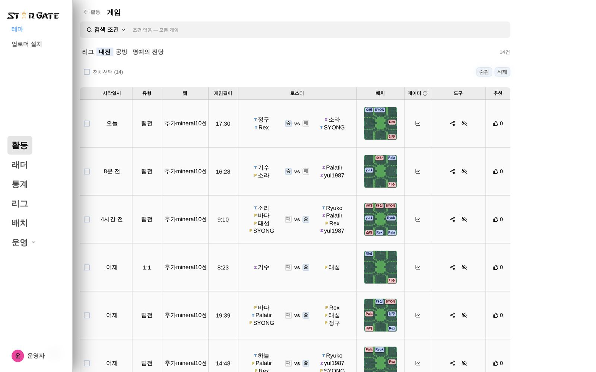
⇄이렇게 설계했다
- 한 번의 응답: 활동 목록에 그 쪽 경기의 맵 격자를 싣고
knownMap으로 중복 제외 · 통계는 7개월 추이를 한 응답에 - 하위 호환 배포: 새 웹 ↔ 옛 서버, 옛 웹 ↔ 새 서버 어느 순서로 올라가도 동작하게 필드를 덧붙이는 방식만 사용
- DB 변경은 SQL 파일로 저장소에 남기고 운영자가 직접 실행 → 그다음 서버 배포 (자격증명은 절대 주고받지 않음)
- 입력 검증: 시작 위치처럼 바깥에서 오는 값은 검증기에서 반올림·범위 밖은 "모름"으로
- 권한·공유: JWT + 리프레시, 역할 코드, 외부 공유 목록은 별도 패스 헤더 · 손님 모드 가명
- 테스트 394개: httpx 비동기 클라이언트로 엔드포인트 단위 시나리오 · 린트는 기존 대비 새 경고 0을 관문으로
한 곳만 고치면 전부 바뀌게
활동과 일정, 너나와, 리그, 게임 목록과 상세 등 모두 컴포넌트 분리.기능이 늘수록 경계를 먼저 다시 그었다.
R재사용성
- 재생기를 별도 라이브러리(scplay)로 떼고, 앱은 미리 빌드된
dist커밋만 받는다 — 배포마다 40초 빌드 제거 - 라이브러리는 앱의 API 주소를 모른다:
setReplayMapFetcher같은 주입으로만 연결(의존 역전) - 로스터 한 벌(
GameRowNames)을 목록·PC 표·재분석·삭제함·외부 공유·리그 세트 6곳이 공유 - 전술 색인 함수 하나를 재생기 검색과 서버 색인이 함께 쓴다
E확장성
- 경기 유형은
GAME_TYPES명세 표 한 곳(팀전 여부·래더·순위 구간) — 새 유형은 한 줄 - 대진표는 경로 문자열(
"", "a", "b"…)로 표현해 임의 크기의 트리와 부전승을 같은 코드로 - 참값 트랙은 판 번호(9→13)로 버전을 매겨 옛 데이터도 그대로 읽는다
- 기기 프로필
DEV9표 하나로 폰·PC 성능 단을 조정
M유지보수
- 11,084줄의 작업 기록: 되물린 값·함정·실측·확인 명령(🔎)을 손질마다 남겨 같은 실수를 두 번 하지 않는다
- 규약 문서는 40KB 상한 — 늘 지킬 규칙만 남기고 이력은 기록으로
- 자동 관문: 메시 덮임 100%, CSS 가드, 등급표·총구표 재생성 검사, 아틀라스
--check - 기각된 가설도 지우지 않고 손잡이로 남겨 회귀 검사가 공짜
어느 클럽이든 쓸 수 있는 운영 도구
리그 결과 입력창에서 세트 추가하고, 게임 결과 중 해당 매치 게임을 선택 가능하게.손으로 적는 결과와 실제 기록을 한 줄로 잇는다.
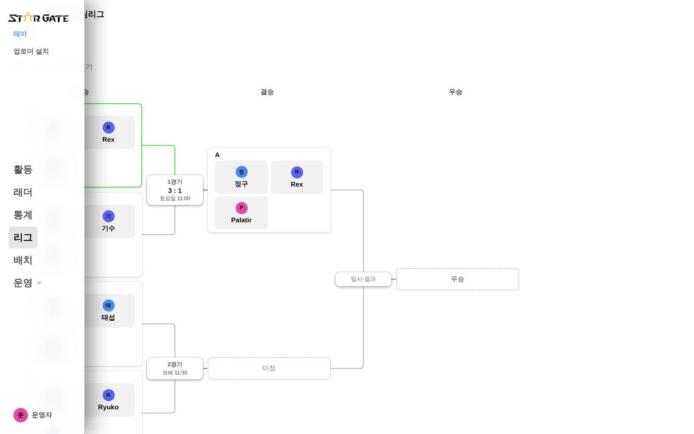
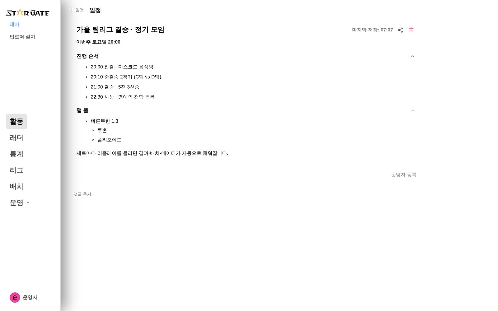
◎보편성
스타크래프트 전용 기능이 아니다. 팀전·개인전, 임의 인원의 대진표, 회원·손님·컴퓨터가 섞인 참가자 풀, 교체 선수, 라운드로빈 배치고사 — 어떤 종목의 동호회든 그대로 쓸 수 있는 일반화된 모델로 짰다. 일정은 특정 양식이 아니라 블록을 조립하는 문서다.
✦편의성
일정을 등록하면 곧바로 편집 화면, 커서까지 선다. 빈 곳 어디를 눌러도 첫 줄이 생긴다. 세트에 실제 게임을 이으면 결과·리플레이·데이터가 따라온다. 케밥 메뉴를 걷고 늘 보이는 도구줄로, 사진은 240p 썸네일로 빠르게, 폰에선 사진첩 저장까지.
⚑운영 흐름
대진 확정 → 일정 등록(홈 게시) → 세트 결과 입력/게임 연결 → 승자 자동 진출 → 명예의 전당. 배치고사는 회차별 명단·대진, 세트 승패로 점수와 티어를 즉시 계산하고 사람마다 전적 총계를 붙였다.
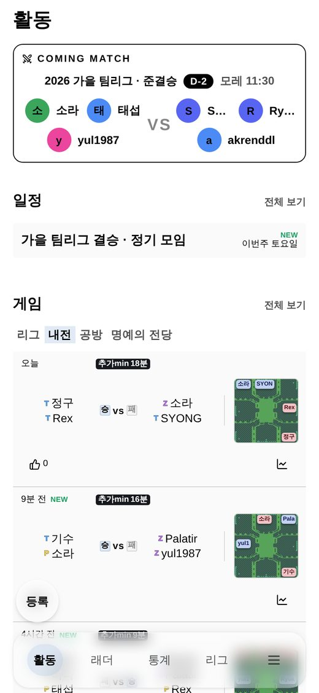
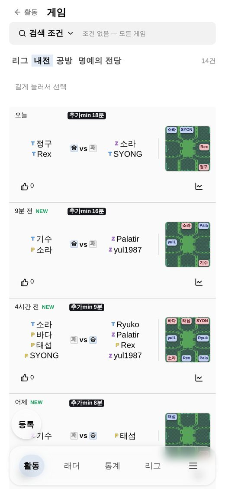
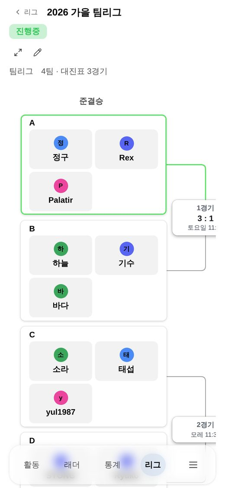
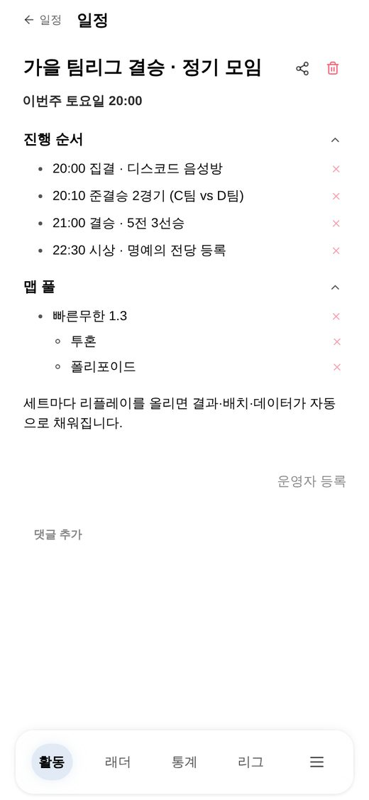
데이터가 다시 경기가 되는 순간
리콜 캐스팅 효과 아비터 쪽에도 필요. 원작은 부르는 동안 투명 구체들이 막 지글지글거리거든.관찰한 원작의 질감을 말로 옮기면, 그것을 코드로 다시 옮겼다.
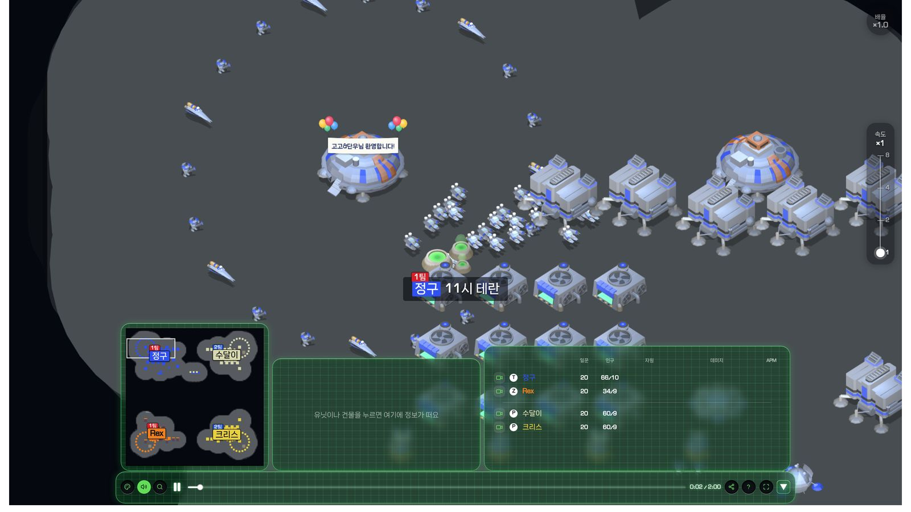
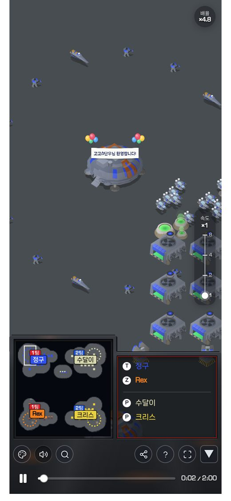
코드로 빚은 114종 — 이미지 파일 없이, 다각형 하나하나
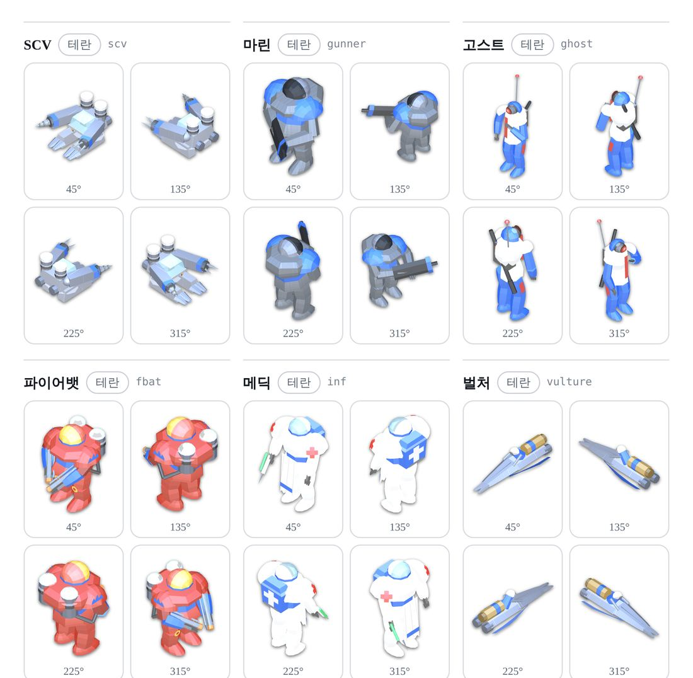
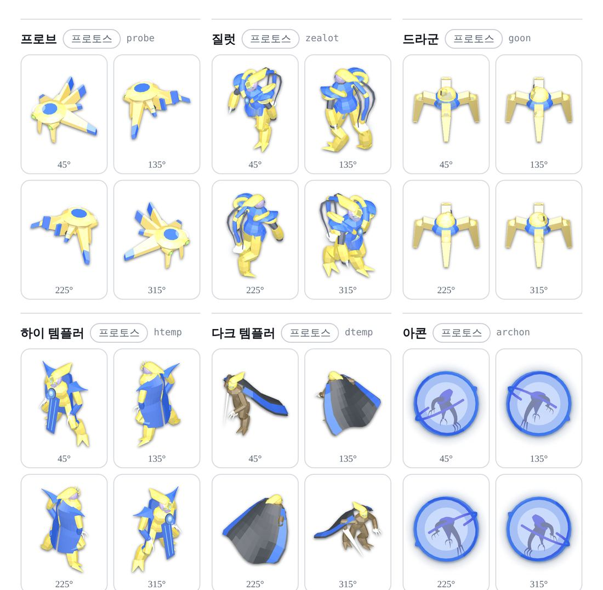
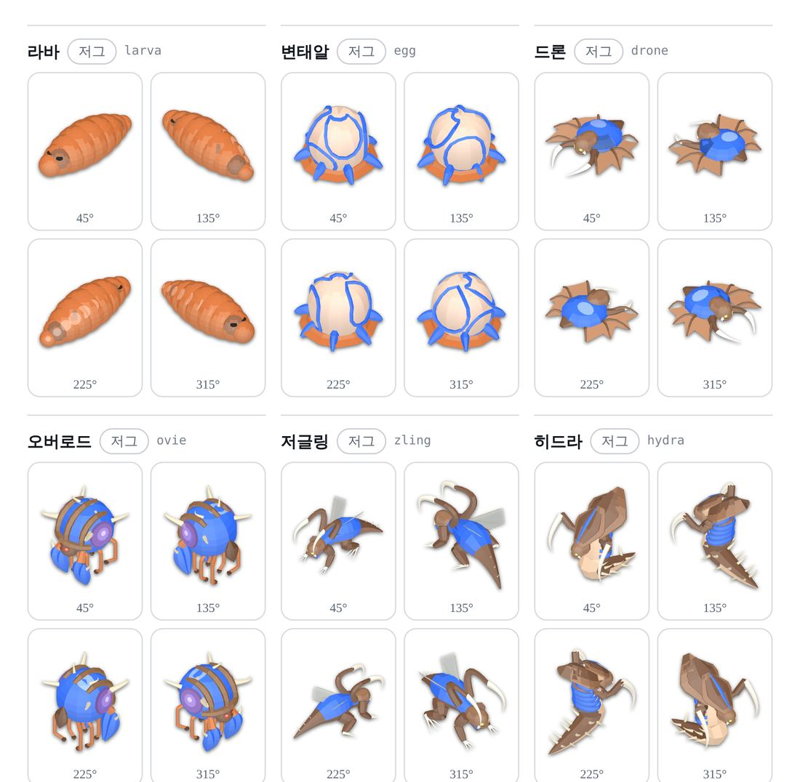
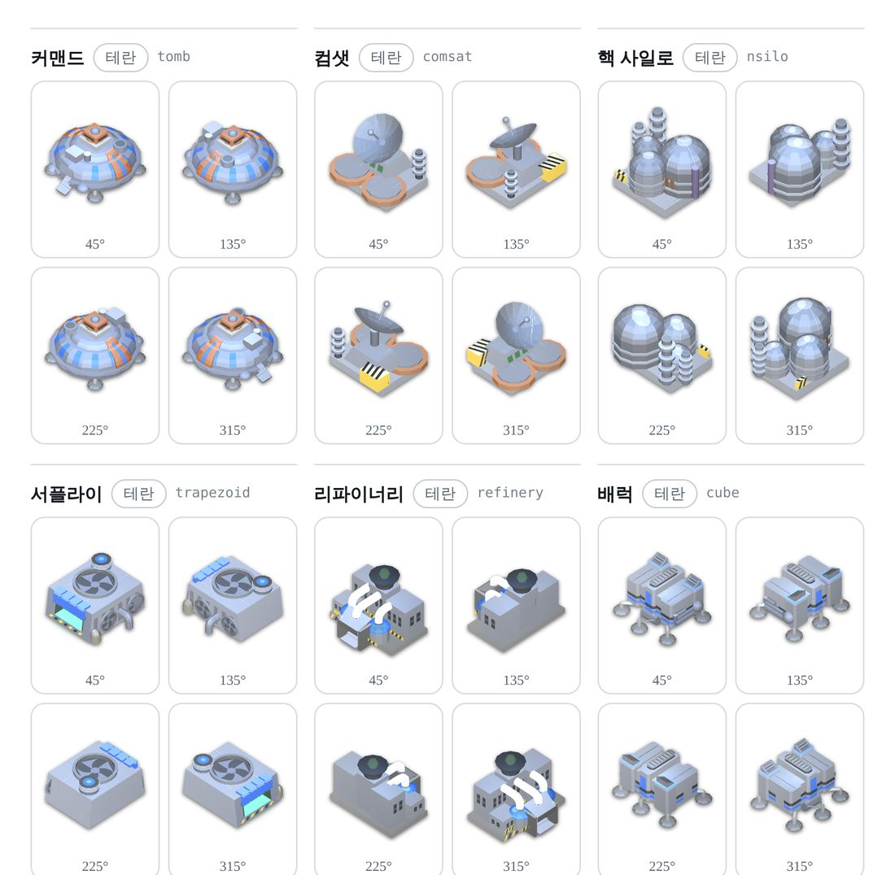
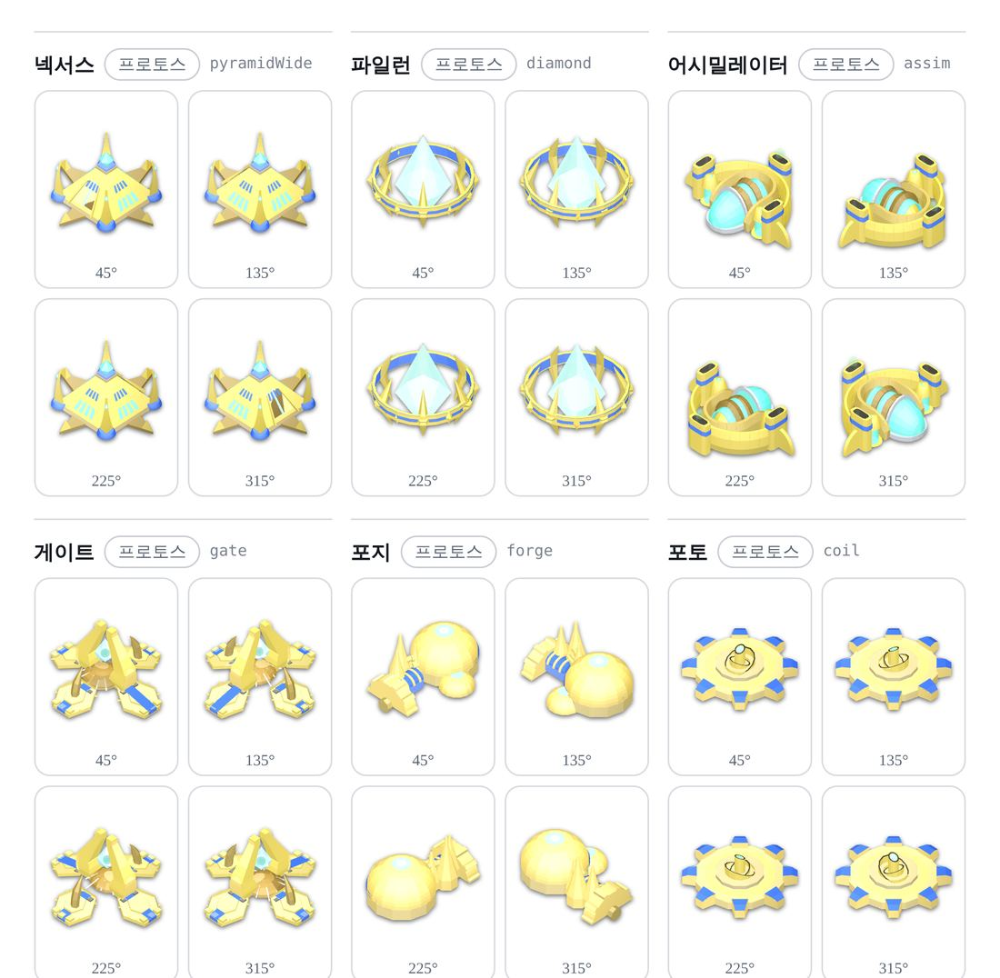
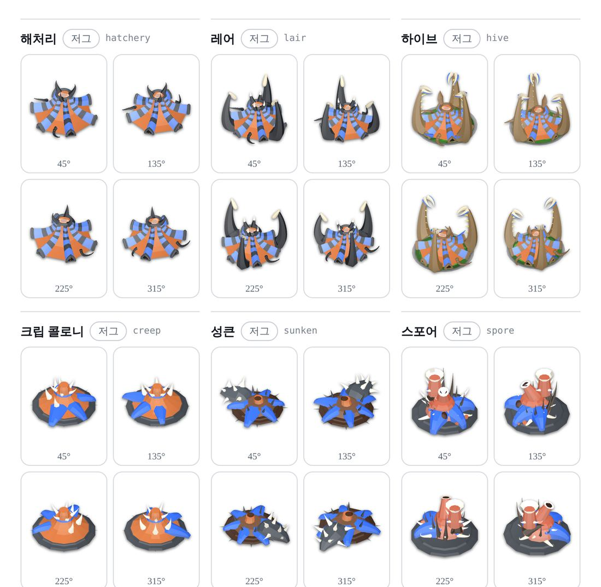
네 방위(45·135·225·315°)를 한 번에 굽는 도록 스크립트가 매 손질의 관문이다. 메시는 요잉 0에서 한 번 굽고 셰이더가 돌린다 — 굽는 시각에 세계를 묻지 않는 규칙.
치열하게 묻고, 끝까지 맞추고, 함께 만든다
이미 재분석도 돌렸고, 원본 데이터를 쓸 일이 나중에 있을지도 모르잖아. 그치?지우기 전에 한 번 더 — 되돌릴 수 없는 일은 사람이 마지막에 판단한다.
✎사람: 방향 · 관찰 · 결정
원작을 직접 보고 차이를 말로 짚는다. 버그는 재현 조건까지 좁혀 건넨다. 셋 중 무엇이 근본 해결인지 되묻는다. 그리고 "배포"라는 말이 있을 때만 세상에 내보낸다.
⚙AI: 구현 · 검증 · 기록
Claude가 세 저장소를 오가며 구현하고, 내보내기 전 타입 검사 · 빌드 · 394개 테스트 · 스크린샷을 스스로 돌린다. 고친 이유와 되물린 값은 기록 파일 끝에 남긴다 — 다음 세션의 AI가 같은 실수를 하지 않도록.
⛨둘 사이의 계약
- 요청이 이름 붙인 것만 건드린다
- DB 자격증명은 주고받지 않는다 — SQL은 사람이 실행
- 해시는 40자리 전체로 보고
- 틀린 경보보다 침묵이 낫다
⏱걸어온 길
원판과 같아지기
헤드리스 1.16.1 검증 장치, 가설 32개, 552,929프레임 일치.
재생기 라이브러리 분리 (scplay)
순수 엔진·워커·WebGL 붓 — 23일간 511커밋.
웹 · API 새 저장소
sg-web 814커밋, sg-api 117커밋 · 테스트 394개.
오늘도 한 칸
팀색을 원작대로 바로잡고, 목록에 맵을 한 번에 싣고, 배치 칩의 크기를 열 번 넘게 다시 맞췄다. 그것이 이 프로젝트의 속도다.